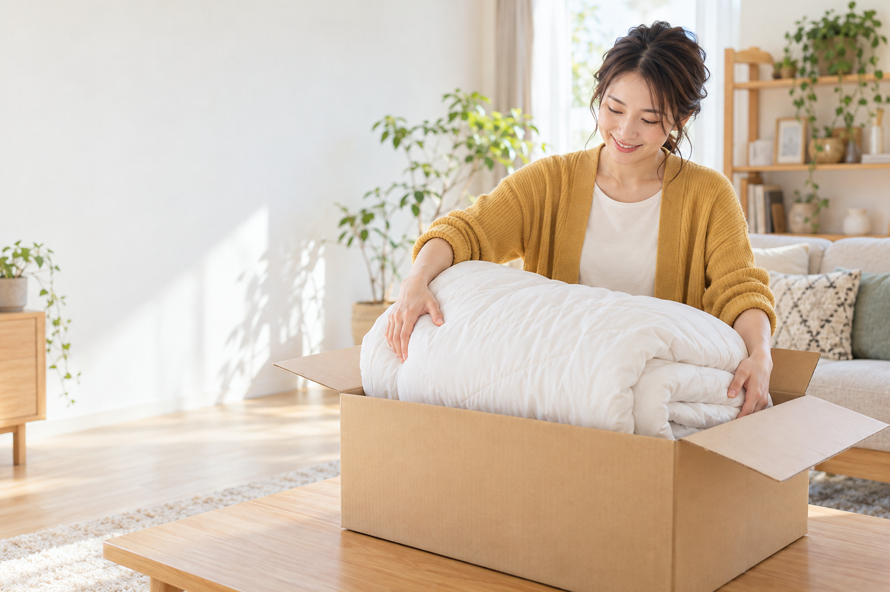

ふだんの暮らしに、布団のお手入れを。
重たい布団を運ばずに。
自宅からクリーニング。

申し込みも、受け取りも。
ご自宅で完結する宅配サービスです。
集荷を申し込む →ご自宅で、申し込みから受け取りまで。
家から頼める、3ステップ。
01 ネットで予約枚数と集荷希望日を選びます。
02 自宅から発送専用の袋に布団を詰めて渡します。
03 きれいになって到着洗浄・乾燥後、ご自宅へ届けます。
毎日使う布団に、
きちんと洗う機会を。
大きくて家では洗いにくい布団も、素材に合わせて洗浄・乾燥。仕上がりを確認してからお返しします。
素材を確認洗浄・乾燥仕上げ確認
布団2枚コース
12,800円（税込）
往復配送・洗浄・乾燥を含みます。
返送目安：約2週間。一部地域は配送対象外です。
気になることを、先に。
Q. 羽毛布団も頼めますか？洗濯表示を確認し、素材に応じて対応可否をご案内します。
Q. 家で準備するものは？専用の集荷袋をお届けします。布団を詰めて、集荷をお待ちください。
集荷を申し込む →ご自宅で、申し込みから受け取りまで。